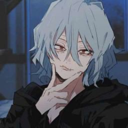
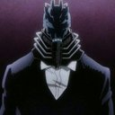
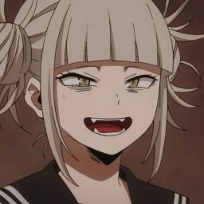
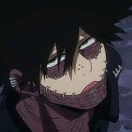
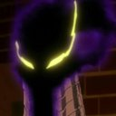
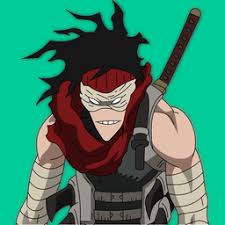

|  |
Tomura Shigaraki |
Decay |
Líder de la Liga de Villanos, su quirk le permite desintegrar todo lo que toca con sus manos. |
|  |
All For One |
All For One |
El villano más poderoso, capaz de robar y otorgar quirks. |
|  |
Himiko Toga |
Transform |
Puede transformarse en cualquier persona cuya sangre beba. |
|  |
Dabi |
Cremation |
Usa llamas azules extremadamente calientes para atacar. |
|  |
Kurogiri |
Warp Gate |
Puede crear portales de teletransportación con su quirk. |
|  |
Stain |
Bloodcurdle |
Puede paralizar a sus enemigos al ingerir su sangre. |